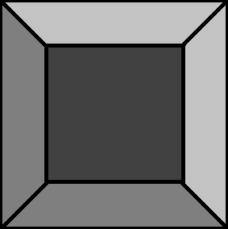
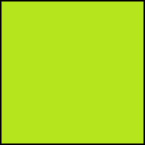
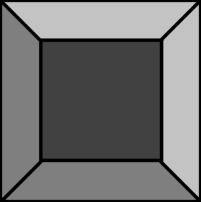
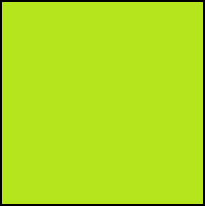

Sprogramiraj robotka, da se bo odpeljal na zeleno polje. Robotek naj neha hoditi ko dospe do zelenega polja! Robotek naj hodi naravnost dokler ne naleti na označeno polje.
Če robotek pride na označeno polje naj se obrne levo nato pa nadaljuje naravnost. Robotek ve, da bo naletel na 10 označenih polj!
Če robotek pride na označeno polje naj se obrne desno nato pa nadaljuje naravnost. Robotek ne ve na koliko označenih polj bo naletel med potjo! Potreboval boš neskončno zanko!
Če robotek pride na označeno polje naj se obrne levo, ko naleti na naslednje označeno polje pa naj se obrne desno, nato levo, desno, itd. Robotek ne ve na koliko označenih polj bo naletel med potjo! Potreboval boš neskončno zanko! Zato, da boš vedel kdaj obrniti levo, kdaj pa desno ustvari spremenljivko. Na spremenljivki lahko shraniš na koliko označenih polj je robotek že naletel, nato pa preverjaš če je število sodo ali liho!
 


